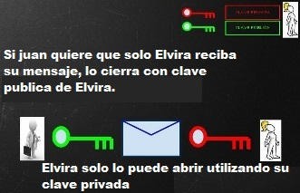

Algoritmos criptograficos & Criptografia de Claves
Algoritmos criptograficos

Los algoritmos criptográficos se pueden clasificar en: Algoritmos de clave simétrica o de clave secreta. En estos algoritmos, se utiliza la misma clave para el cifrado y el descifrado. El algoritmo Advanced Encryption Standard (AES) es un ejemplo de un sistema de cifrado simétrico ampliamente utilizado.
Criptografia de claves
Criptografia de clave simétrica
El proceso de cifrado y descifrado de información mediante el uso de una única clave se conoce como criptografía de clave simétrica o criptografía de clave secreta. En la criptografía de clave simétrica, las claves utilizadas para cifrar el texto en claro y para descifrar el texto cifrado suelen ser idénticas (situación habitual), o bien cuando se conoce una también se conoce la otra, ya que están vinculadas mediante una transformación muy simple.
Criptografia de clave pública
La criptografía de clave pública apareció para hacer resolver los problemas de seguridad que plantea la criptografía simétrica. Este método resuelve el problema de transmisión de claves que tiene la criptografía de clave secreta mediante el uso de dos claves en vez de una sola, utilizando una de ellas para el cifrado, y la otra para el descifrado.